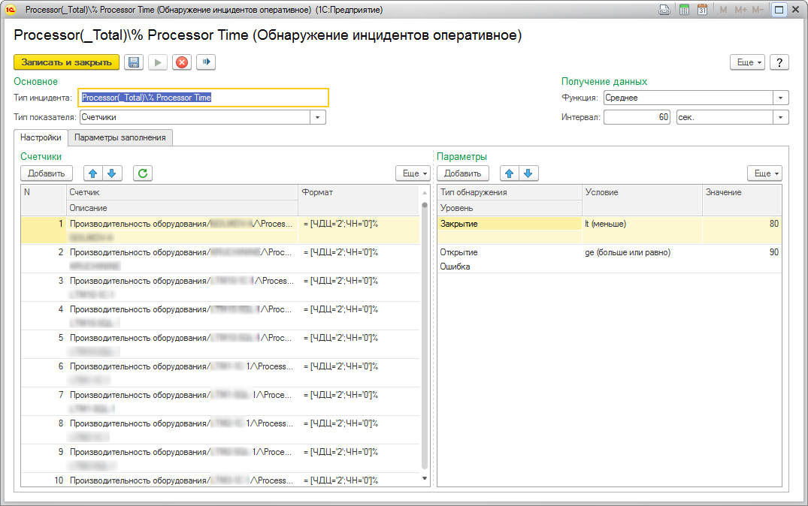

Справочник "Обнаружение инцидентов оперативное" предназначен для оперативного создания инцидентов при выходе показателей мониторинга за заданные границы.

Назначение реквизитов:
- "Тип инцидента" - значение типа инцидента, которое будет создано при обнаружении инцидента.
- "Тип показателя" - значение типа показателя, отвечающее за логику обнаружения.
- Группа "Параметры" - параметры обнаружения, срабатывает первое подходящее условие, условие проверяются сверху вниз.